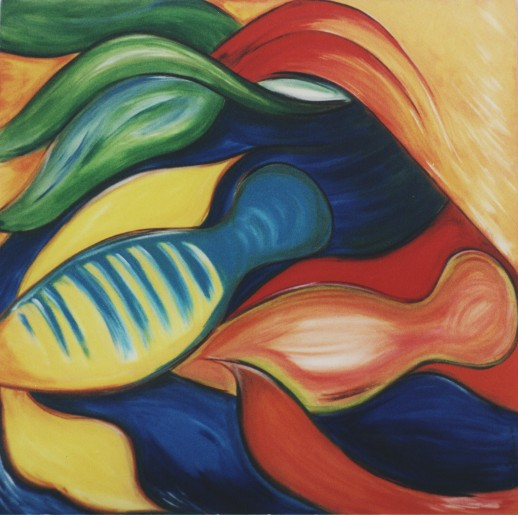
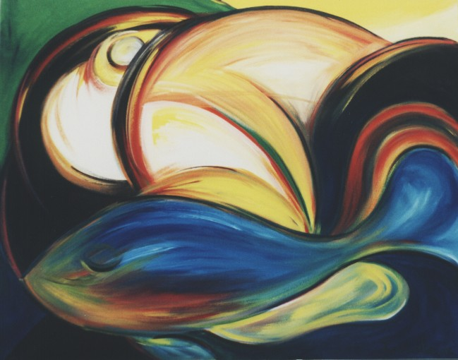
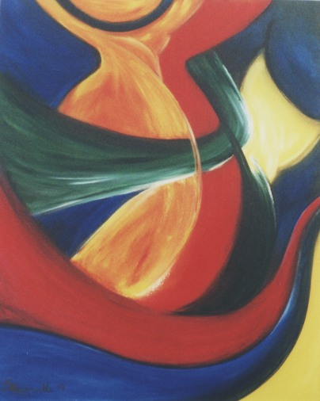
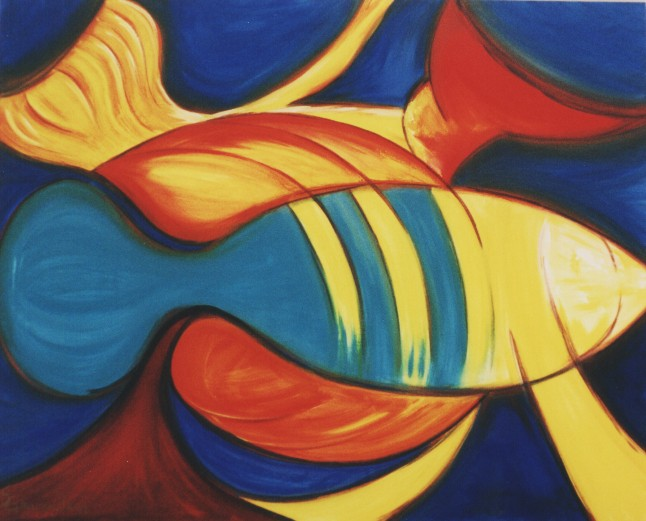
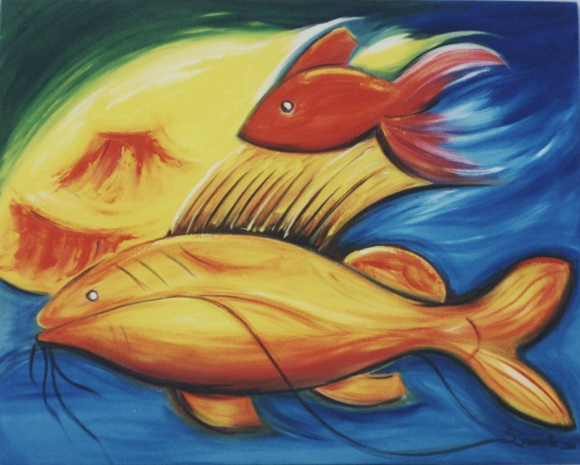
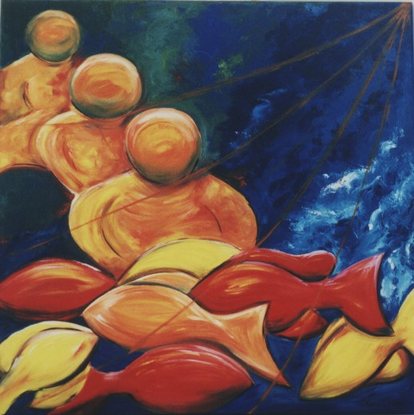
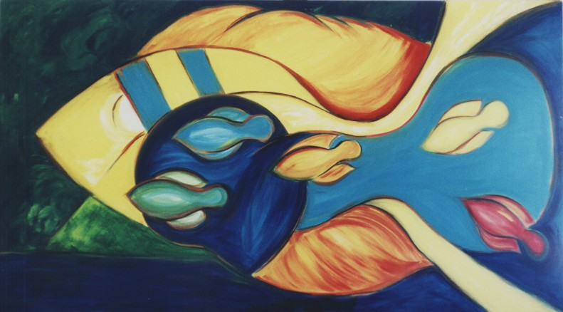
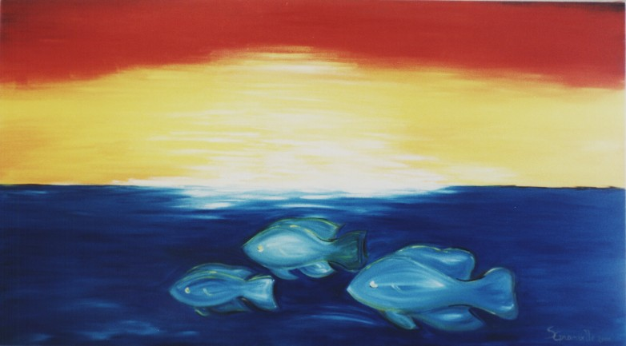
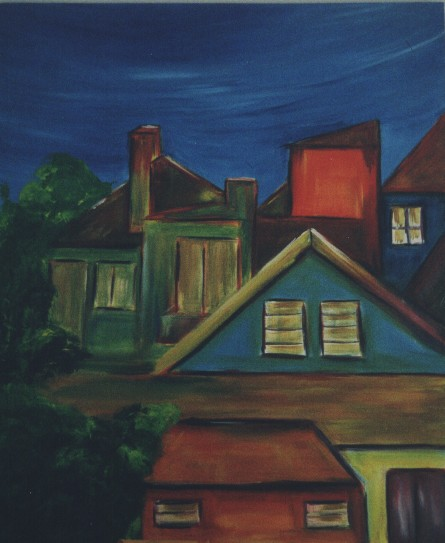

S.Granville

"Galanteio Aquátil"
S.Granville
Acrílica sobre Tela
(100 x 100)
O fantástico ritual
amoroso dos Killifishes recebeu a interpretação de S.Granville
nesta obra.

"Ânima"
S.Granville
Acrílica sobre Tela
(100 x 80)
Da luz à fotossíntese
orgânica,
e o esplendor das cores e formas
animadas em segmento ao status vegetal.
Não somente vida, mas
ação sobre a escuridão.

"Vias Vitais"
S.Granville
Acrílica sobre Tela
(80 x 100)
O desenrolar dos acontecimentos
orgânicos tangenciando e perpassando formas às vezes humanas,
às vezes animal, de
aura cárnea.
Luz, céu, sol.
Elementos produzindo vias de crescente tráfego e de imprevisíveis
formas.
S.Granville nos trouxe em sua
obra "Vias Vitais", a sua visão sobre os caminhos que a vida produz
para perpetuar-se.
 "Vida Fecunda"
S.Granville
Acrílica sobre Tela
(100 x 100)
O encaixe de formas num dimorfismo
perfeito, o rubor sangüíneo dos tons, a tensão suave
mas precisa das linhas,
tocam a essência da vida
em seu maior poder, a gana em perpetuar-se.
"Vida Fecunda"
S.Granville
Acrílica sobre Tela
(100 x 100)
O encaixe de formas num dimorfismo
perfeito, o rubor sangüíneo dos tons, a tensão suave
mas precisa das linhas,
tocam a essência da vida
em seu maior poder, a gana em perpetuar-se.

"Berço Terra"
S.Granville
Acrílica sobre Tela
(100 x 80)
Como ovos hospedados indefinidamente
no leito seco,
os Killifishes "brotam" do
chão quando a água da chuva lhes favorece.
Este belo e delicado milagre
aqui representado, sintetiza a essência da vida,
que da terra se serve temporariamente,
para retorná-la, ao fim.

"Vulcânica Reprodução"
S.Granville
Acrílica sobre Tela
(100 x 80)
Em brilhante analogia, S.Granville
serviu-se da voluptuosidade vulcânica,
para traduzir em explosão
e em derrame abundante,
a fantástica reprodução
de algumas espécies de peixe.
 "Gota Elementar"
S.Granville
Acrílica sobre Tela
(80 x 100)
Uma gota de vida.
Água produzindo e perpetuando
a vida.
Elemento água primordial.
Um elo ao passado original e incógnito que repousa no subconsciente.
"Gota Elementar"
S.Granville
Acrílica sobre Tela
(80 x 100)
Uma gota de vida.
Água produzindo e perpetuando
a vida.
Elemento água primordial.
Um elo ao passado original e incógnito que repousa no subconsciente.

"Redes e Rédeas"
S.Granville
Acrílica sobre Tela
(100 x 100)
Sob um firmamento ora plácido,
ora sombrio ou tempestuoso,
viventes enredados na teia
da vida, colhidos pelas vicissitudes, ou guiados por rédeas maiores.
Interrogações
pairam...

"Pátria Vida"
S.Granville
Acrílica sobre Tela
(180 x 100)
Terra Brasil, a pátria
conteste da biodiversidade. Patrimônio maior, a vida.
Magna bandeira, caminho aberto
no país água, para um séquito viçoso e multifacetado,
numa convergência de vida.

"Atmosferas"
S.Granville
Acrílica sobre Tela
(180 x 100)
Horizontes são amplos
para aqueles que erguem seus olhos.
O ambiente onde se vive
é uma coisa relativa.
Parabéns, cara
S.Granville!
Surpreendeu-nos mais
uma vez.
- Goimbé -
